高等数学教程（2）
高等数学基础教程：导数的定义与使用
一.基本定义和性质
导数的定义
恭喜！你来到了导数这一章！现在，我们可以使用它来更精确的描述函数是怎么增长变动的！！！
首先，引入一个场景：讨论速度与位移，并且我们都用时间来表示：
那么，一个平均速度可以用如下这个式子来表达：$v=\frac{f(t)-f(t_0)}{t-t_0}$
这是我们中学就已经熟知的。
现在，让我们让$t\rightarrow{t_0}$ 也就是让t逼近$t_0$。这样，回到高中物理，我们就知道我们得到了瞬时速度。
其实，很多函数变化，都可以类比的使用这种办法得到函数在一个点的变化情况，下面，让我们统一一下，使用一个定义来综述：
$定义 y=f(x)在x_0的领域内有定义，对x_0取增量\Delta{x}，那么函数的增量就是\Delta{y}=f(x_0+\Delta{x})-f(x_0)，如果\lim\limits_{\Delta{x}\rightarrow{0}}\frac{\Delta{y}}{\Delta{x}}=\lim\limits_{\Delta{x}\rightarrow{0}}\frac{f(x_0+\Delta{x})-f(x_0)}{\Delta{x}}$ $是存在的，我们就称呼y=f(x)在x_0处可导，且这个极限值就是y=f(x)在x_0处的导数$
记作$y’| _{x=x_0},f’(x_0),\frac{dy}{dx}|_{x=x_0}，\frac{df(x)}{dx}|_{x=x_0}$上面四个选一个
当然，导数还有另一个定义：就是
$如果\lim\limits_{x\rightarrow{x_0}}\frac{\Delta{y}}{\Delta{x}}=\lim\limits_{x\rightarrow{x_0}}\frac{f(x)-f(x_0)}{x-x_0}是存在的，我们就称呼y=f(x)在x_0处可导，且这个极限值就是y=f(x)在x_0处的导数$
如果函数在一个区间内处处可导，我们就可以再用一个函数刻画导数：导函数$f’(x)$
下面来看一些函数的导（函）数（方便起见使用h代替$\Delta{x}$）
（1）$f(x)=C$
则：$\lim\limits_{h\rightarrow{0}}\frac{f(x+h)-f(x)}{h}=0$
故$C’=0$
(2)$f(x)=x^n$
1.当n=1时:$\lim\limits_{h\rightarrow{0}}\frac{f(x+h)-f(x)}{h}=1$
2.当n>1时：$\lim\limits_{h\rightarrow{0}}\frac{f(x+h)-f(x)}{h}=\lim\limits_{h\rightarrow{0}}\frac{(x+h)^n-x^n}{h}$
而：$(x+y)^n=x^n+nx^{n-1}y+\frac{n(n-1)}{2}x^{n-2}y^{2}+…+ny^{n-1}x+y^n$
于是$极限=\lim\limits_{h\rightarrow{0}}nx^{n-1}+(…)\times{h}=nx^{n-1}$
3.当$f(x)=x^{\mu},\mu\in{R}，(x\neq{0})$
于是：
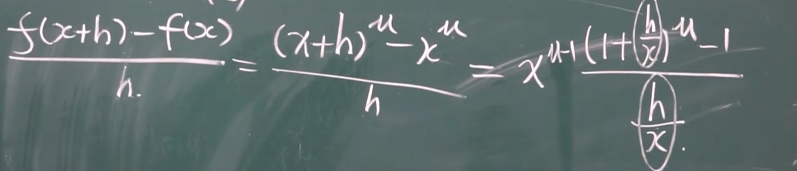
$(x^\mu)’=\mu{x^{\mu-1}}$
4.$f(x)=\sin{x}$
$\lim\limits_{h\rightarrow{0}}\frac{f(x+h)-f(x)}{h}=\lim\limits_{h\rightarrow{0}}\frac{\sin{(x+h)}-\sin{x}}{h}=\lim\limits_{h\rightarrow{0}}\frac{\cos(x+\frac{h}{2})\times{\sin{\frac{h}{2}}}}{\frac{h}{2}}=\cos{x}$
所以：$\sin’{x}=\cos{x}$
类似的$\cos’{x}=-\sin{x}$
5.$(a^x)’=a^x\ln{a},特别的(e^x)’=e^x$
6.$\log’_{a}{x}=\frac{1}{x\ln{a}},特别的\ln’x=\frac{1}{x}$
单侧导数
导数也有单侧导数的这一概念，直观的讲，正是导数以不同的方式逼近一个点所产生的：
回忆我们先前的类似概念，左侧导数的定义是这样的：
更容易理解的：右导数的定义是这样的：
当然，也有第二定义
左导数：
$$ f'_{-}(x_0)=\lim \limits_{ { x } \rightarrow{x_0^-} } \frac{f(x_0+h)-f(x_0)} {h} $$ 右导数：
于是，可导的一种判断方式有了：在一个点的左右导数存在相等。
对于$y=|x|$ ，在$x_0$左侧的左导数为-1，右导数为1，这两个不相等，故$|x|$在$x=0$处不存在导数。
导数也有几何意义
导数也有几何意义，不错。那么，导数的几何意义是什么呢？直接说：导数的几何意义就是函数图像在某一点上的切线的斜率，一个处处可导的曲线必然光滑。
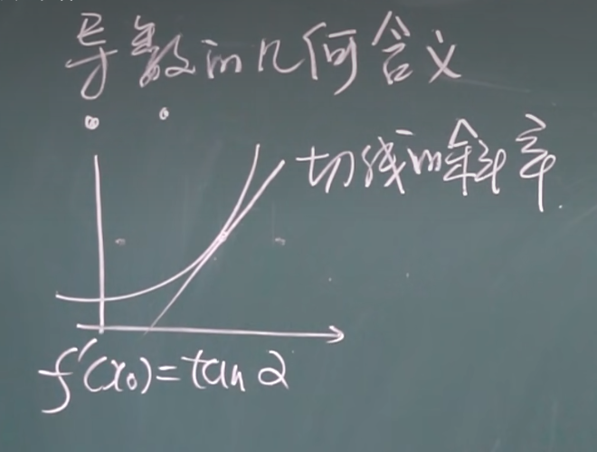
于是，切线方程可以这样给出
有切线了，法线也会有：法线就是过切点的，垂直于切线的线：
比如说，让我们求$y=\frac{1}{x}$在$(\frac{1}{2},2)$上的切线：
联系起来：探寻可导与连续的关系
我们可以简单的理解认为可导就说明函数曲线的光滑，连续就是函数图像不产生间断。看来：函数如果光滑，则一定没有间断，函数没有间断却不一定光滑。那我们认为：可导必然连续，连续不一定可导。
对于这件事情：可以想象一排自行车：如果他们想多米诺骨牌一样倒下了 （可 倒（导））说明他们一定连续的放置，反之，如果不去动他们，则他们就算连续放置也不会倒下，可以这样记。
回到数学的定义上，我们对比一下：
于是，如果一个$\Delta{x}\rightarrow{0}$，同时，可导定义比出来的比值还必须是一个常数，由同阶无穷小的定义，我们不得不得出$\lim\limits_{\Delta{x}\rightarrow{0}}\Delta{y}=0$的结论，也就是连续。
反之，我们的$\Delta{y}$可能并不会与$\Delta{x}$属于同阶无穷小，因此，我们的可导定义极限可能发散。于是：就可能并不可导
求导法则：和差商积
高中我们就接触过了：
首先定义$u,v$是两个可导函数，其值为$u’,v’$
法则1234都可以扩展：
对于有限个$u_i$的可导函数：他们的和的导数为各自导数的和
对于有限个$u_i$的可导函数：他们的积的导数为所有$u_i$的积中轮流取出一个$u_k(k\in{(1,i)})$求一次导
反函数的求导法则
反函数也能求导。
超前一点，可以引入记号$\frac{dy}{dx}$表达$f(x)$的导数，而$\frac{dx}{dy}$就是反函数，于是：
他让我们的导数公式可以扩充了：
例如:$x=\sin{y}$作为$y=\sin{x}$的反函数的公式
于是：$y=\arcsin{x}$的导数公式正是：$\arcsin{x}’=\frac{1}{\sqrt{1-x^2}}$.
这样，我们也还可以求出其他公式：
复合函数的求导法则
下面，我们先从严肃的讲起：
假设，我说假设：$f(x)$是一个很复杂的东西：但好消息是，可以是做若干函数的嵌套：比如说$\ln{\sqrt{\frac{1}{cos{\ln{\sin^2{x}}}}}{sin{x}}}$云者，那这样的函数这么求导呢？复合求导法来力！
就是说，我们可以视$u$作一个整体，先想象成单一函数$f(x)$求导，不过$x$是$u$,随后对$u$求导，乘起来的时候u要换成x.
使用微分语言是这样描述的：
想象成分式乘法，我们自然可以：
例如说：对$e^{x^{3}}$求导
我们首先设$u=x^3$，而$e^u$对$u$求导显然是$e^u$，那么$u$对$x$是$3x^2$根据法则，我们要把连着直接相乘$3e^u{x^2}$，但是还没换回来$x$,因此将$u=x^3$换回来得到结果$3e^{x^3}{x^2}$
那么：$y=\ln{\cos{e^x}}$如何？
直接设置$y=\ln{u},u=\cos{v},v=e^x$结合复合函数求导法则。
$y’=\frac{1}{u}\times{-\sin{v}}\times{e^x}$
换元：$y’=\frac{-\sin{e^x}\times{e^x}}{\cos{e^x}}$
导数公式表
介绍完导数的求导法则，我们也就可以引入一系列的求导表了：
高阶导数
就是对一个函数求有限次导数：比如说
在微分学里也有专门的符号表示
一些常见的N阶导数公式是如下的：
一些法则也是成立的：
但是乘法不是，是莱布尼兹公式：
隐函数求导
我们现在接触的函数都是显函数，$y$与$x$都是显然分离的，比如说$y=\sin{x}$云者，有一些函数是$x$和$y$混在一起的，比如说如下的几个式子
$ e^{xy}+\sin{y^2}+x^3+8=0$
$e^y-xy-e=0$
云者。这些被称为隐函数，或者说：关于x的一个方程。
下面，我们介绍这样函数的求导方式：
我们假设$y=y(x)$是一个x的函数，于是，这样的方程成为了一个恒等式：一个关于x的一个大函数$F(x,f(x))=0$的式子。，现在我们求导，就是使用求导法则运算解决问题：右侧作为常数，导数恒为0，对左侧求导即可。下面对：
$e^y-xy-e=0$
求导
左侧：$e^y\cdot{y’}+y+xy’$
右侧：0
现在参数分离：$y’=-\frac{y}{e^y+x}$
$y^5+2y-x-3x^7=0$
求导：
左侧：$5y^4y’+2y’-1-21x^6=0$
右侧：0
现在参数分离：$y’=\frac{1+21x^6}{5y^4+2}$
参数方程求导
我们说一些函数可以用
表示，这个时候，可以使用微分形式的公式更好的表达求导：
微分可以视作增量的一种表达：
回顾增量公式$\Delta{y}=f(x_0+\Delta{x})-f(x_0)$,我们常常发现以这种形式表达的$\Delta{y}$经常可以被写成$A\Delta{x}+o(\Delta{x})$的形式，注意到$A$与$\Delta{x}$是无关的。如果函数的增量可以这样表达：
$A$与$\Delta{x}$是无关,
那么，我们就改写成这样的形式：
同时，我们还说这样的函数在这一点是可微的：并且，可微一定可导，可导也一定可微：事实上，以此为基准
微分与导数就是变化率问题的等价表达
于是任何微分公式都可以由上述公式给出：
比如说：$y=x^2,dy=2xdx$
微分在近似计算的应用
回到上面讲的公式：
这个公式，我们可以对一个已知临近量的函数值求另一点相近的函数值的近似值，我们对公式移项：
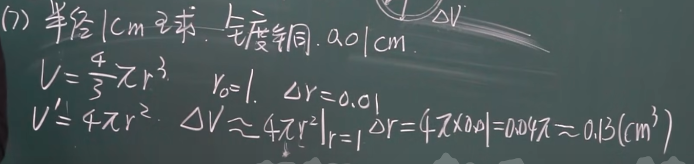
二.导数的应用
Rolle（罗尔）定理
事实上，为了更好的证明罗尔定理，一般我们需要严格的引入费马定理：
费马定理
$f(x)$在$x_0$及其领域有定义，且在$x_0$处可导，如果$f(x)\leqslant{f(x_0)}$(或者$f(x)\geqslant{f(x_0)}$)
则$\forall{x}\in \cup(x_0)$(这表示领域)，$f’(x_0)=0$
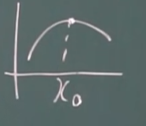
看起来容易，怎么证明？我们不妨从$x_0$可导入手：
证明：以$f(x_0)$是最大值为例：函数$f(x)$在$x_0$处可导，那就要求：
同时注意到$x_0+\Delta{x}$也是在$\cup(x_0)$上的，于是也有：
同时函数$f(x)$在$x_0$处可导：
上面的三个式子联立：得到$f’_{-}(x_0)=f’_{+}(x_0)=f’(x_0)=0$
证毕。
于是：又把导数为0的点成为驻点，因为函数在这一点停靠在$y=f(x_0)$上不变化，他们是可能的极值点（会在后面阐述为什么是可能）
罗尔定理
首先函数$f(x)$满足
1）在$[a,b]$上连续 2)在$(a,b)$上可导 3）$f(a)=f(b)$
则至少存在一点$\xi\in(a,b),f’(\xi)=0$
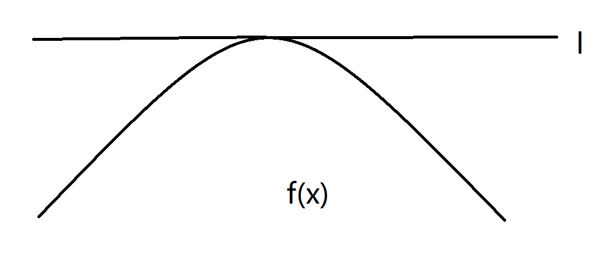
这个定理说明了在端点值相等的区间里函数必有至少一个驻点。
拉格朗日中值定理
要求：1)$[a,b]$连续 2)$(a,b)$可导：
则函数$f(x)$在$(a,b)$上至少有一个点$\xi$,使得下面的式子成立：
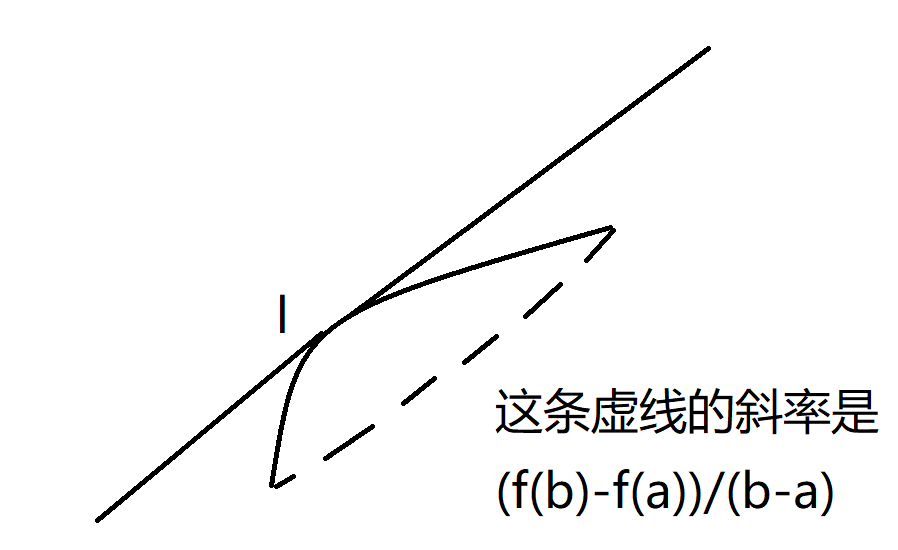
说白了，就是罗尔定理的扩展，我们链接两个端点，产生的直线称为函数的一条弦在函数上我们至少可以找到一个点的切线斜率等于这条线的斜率的大小。
柯西中值定理
如果$f(x)$和$F(x)$满足：
1）$[a,b]$连续 2)$(a,b)$可导 3）$\forall{x}\in(a,b),F’(x)\neq{0}$
则至少有一个点$\xi$,使得$\frac{f(b)-f(a)}{F(b)-F(a)}=\frac{f’(\xi)}{F’(\xi)}$
这又是拉格朗日中值定理的推广。
洛必达法则
这玩意干嘛的？求解未定式$\frac{0}{0}$,$\frac{\infty}{\infty}$的式子
注意：法则内容如下：
1）两个函数$f(x),F(x)$在$x\rightarrow a$都同时倾向于$0$或者$\infty$
2）在$a$的去心领域内$f’(x),F’(x)$都存在且$F’(x)\neq 0$
3）$\lim\limits_{x\rightarrow a}\frac{f’(x)}{F’(x)}$存在（或者无穷大）
则$\lim\limits_{x\rightarrow a}\frac{f(x)}{F(x)}=\lim\limits_{x\rightarrow a}\frac{f(x)}{F(x)}$
例子：
注意：如果使用完一次洛必达后的式子仍满足洛必达的条件可以继续使用
比如说
到这里就不能再使用洛必达法则了：因为$\lim\limits_{x\rightarrow 1}\frac{6x}{6x-2}$不满足条件1)，所以：直接带值得到$\frac{3}{2}$结束
注意，我们可以使用这个法则分析一些常见函数的发散速度：
命题：比较$\ln x,x^n,e^{\lambda{x}}$的发散速度
比较$\ln x,x^n$
这意味这$\ln{x}$的发散速度小于$x^n$的发散速度。
比较$x^n，e^{\lambda{x}}$
这意味这$x^n$的发散速度小于$e^{\lambda{x}}$的发散速度。
泰勒公式
泰勒公式是用若干多项式近似描述函数的一个公式：
这样一个过程。$R(x)$是高于n阶的一个误差数。
我们求$x_0$一阶导数得到：$f’(x_0)=a_1$
类似的$f’’(x_0)=1\cdot 2a_2$
$f’’’(x_0)=1\cdot 2 \cdot 3a_3$
…
$f^{(n)}(x)=n!a_n$
这样多项式的系数就确定了！替换一下：
其中$R_n(x)=o(x-x_0)^n$当然，由拉格朗日中值定理，$R_n(x)$也可以这样表达：
当然还有更紧凑的形式：
我们使用泰勒公式看看一些函数的近似,为了简便，我们自然取$x_0=0$
函数的单调性
现在，我们可以系统的分析函数的单调性了：
函数的单调性分为单调递增和单调递减：( x 在区间 I ,且函数连续)
于是下面给出定理：
同理：单调递减的也是类似的
函数的单调性与一阶导数息息相关，看一些例题
因为：
故函数总在$[-\pi,\pi]$单调递增。
这样的一些点是我们在求解一阶导数的时候需要注意的：
1）$f’(x)=0$ 的点：又叫驻点。
2)导数不存在的点
例题：
函数的凹凸性
我们还要关注函数是怎样的单调递增或者单调递减，这就需要我们使用二阶导数分析函数的凹凸性。
首先我们来看定义：
仍对于$f(x)$在区间$I$上连续，如果对任意的$x_1,x_2 \in I (x_1\neq{x_2})$
我们就称呼$f(x)$在区间$I$上的图像是凹的（上凹）
类比的：如果：
那么我们又称呼$f(x)$在区间I上的图像是凸的（下凹的）
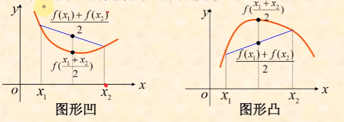
函数$f(x)$如果在$I$上是凹（凸）的，那么$-f(x)$是凸(凹)的。
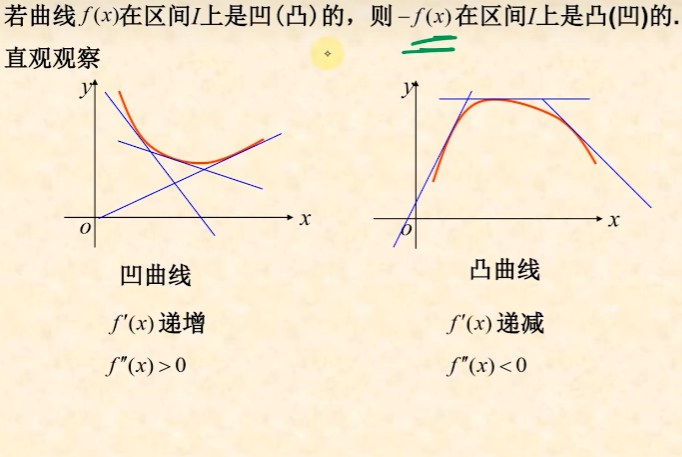
我们先前就提到过：函数的凸凹性和函数的二阶导数密切相关，下面我们来一睹定理的芳容：
设$f(x)$在区间$I$上二阶可导，那么：
（1）若在$I$上$f’’(x)>0$，那么我们说函数是凹的
（2）若在$I$上$f’’(x)<0$，那么我们说函数是凹的
极值及其求法
首先我们需要区分一下极值和最值：
极值：邻域内函数的最大最小值
最值：在全函数的定义域内函数的最大最小值
下面给出严肃的定义：
定义：$f(x)$在$x_0$的领域$\cup (x_0)$下有定义且连续,$\forall{x}\in\mathring{U}(x_0)$,$f(x)
极值的定理 I:(必要条件)函数可导，且在此点$x_0$的导数 $f’(x_0)=0$
极值的定理 II:(第一充分条件)：$f(x)$在$x_0$处连续,且在$\mathring{U}(x_0)$处可导
（1）$x \in(x_0-\delta,x_0)$ 且$f’(x)>0$,而$x \in(x_0,x_0+\delta)$ 且$f’(x)<0$我们说函数在此点取上极大值
（2）$x \in(x_0-\delta,x_0)$ 且$f’(x)<0$,而$x \in(x_0,x_0+\delta)$ 且$f’(x)>0$我们说函数在此点取上极小值
如果不变号，那就不是极值点。
下面总结流程：
（1）求$f’(x)$
（2）求驻点和不可导点
（3）考察上面这些点的变号情况
例题：$f(x)=(x-4)\sqrt[3]{(x+1)^2}$的极值点.
$f’(x)=\frac{5(x-1)}{3\sqrt[3]{x+1}}$令$f’(x)=0$
得到 $x=1$是驻点，$x=-1$是不可导点
1)$x=-1$,$x<-1$时，$f’(x)>0$, $x>-1$时，$f’(x)<0$,所以这是一个极大值点
2）$x=1$,$x<1$时，$f'(x)<0$, $x>-1$时，$f'(x)>0$,所以这是一个极小值点
当然还有别的判断方式：
定理 II’（第二充分条件）函数$f(x)$二阶可导，$f’(x_0)=0,f’’(x_0)\neq{0}$
当：
1)$f’’(x)<0$在$x_0$处取极大值
2)$f’’(x)>0$,在$x_0$处极小值
函数图像的绘制
下面我们开始绘制函数的图像！这也是系统分析函数的步骤
1）分析函数的定义域，以及可能的奇偶性，周期性
2)求出一阶导数，二阶导数，和他们等于0的点
3)找出函数的间断点（从定义域得到），以及一阶导数，二阶导数不存在的点
4）由此求出函数的单调性凹凸性
5）看看是否有渐近线（铅锤，水平，斜的渐近线）
6）确定极值（带点）
例如：$y=x^3-x^2-x+1$
显然函数的定义域为$R$，且无奇偶性，周期性
$f’(x)=3x^2-2x-1,f’’(x)=2(3x-1)$
令$f’(x)=0,x=-\frac{1}{3}或x=1$,当$f’’(x)=0,x=\frac{1}{3}$
确定函数的分间断是：$(-\infty,-\frac{1}{3}),[-\frac{1}{3},\frac{1}{3}],[\frac{1}{3},1],[1,+\infty]$
并且列表时按照如下格式列
![image-20230107161122390]image-20230107161122390.png)
补充：函数的渐近线是如下公式确定的：
至于水平渐近线就是$\lim\limits_{x\rightarrow{\infty}}(f(x)-b)=0$那么就是$y=b$
铅锤渐近线:$\lim\limits_{x\rightarrow{a}}f(x)\rightarrow\infty$则就是$x=a$
曲率分析：
我们使用曲率来分析曲线的弯曲程度：
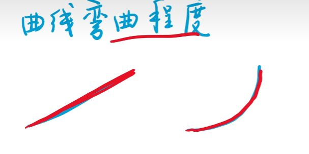
这样看
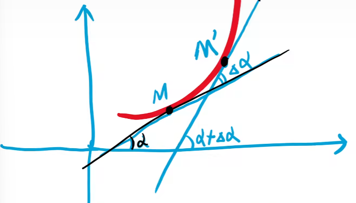
可以看到，如果$M$移动相同单位，其倾角变化越大，那就称之曲率越大：
如果我们让图片里的$M,M’$靠拢，不久类比的得到一个点的曲率了吗 ？（ds是弧微分，后面有图片展示）
这样：直线的曲率:$K=0$
圆的曲率:$K=\frac{1}{r}$（ r 是圆的半径）
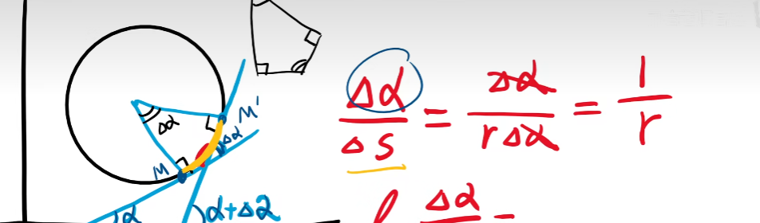
曲率的公式在直角坐标系的公式可以从定义得到:
$y’=\tan{\alpha}$,$y’’=\sec^2{\alpha}$,于是:
而$ds=$$\sqrt{1+y’^2}$
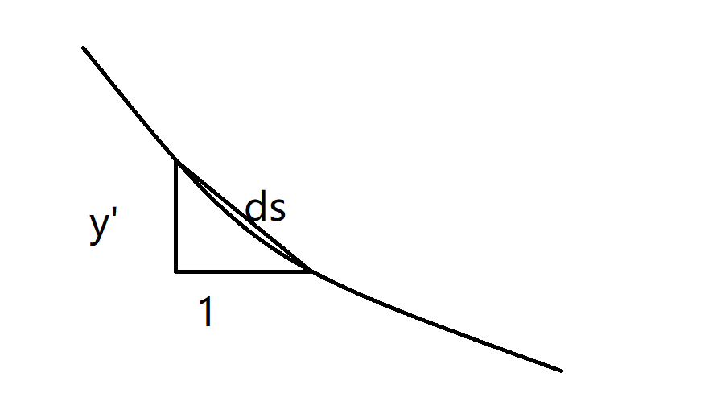
弧微分
于是：
类比的，在参数方程下：
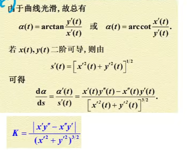